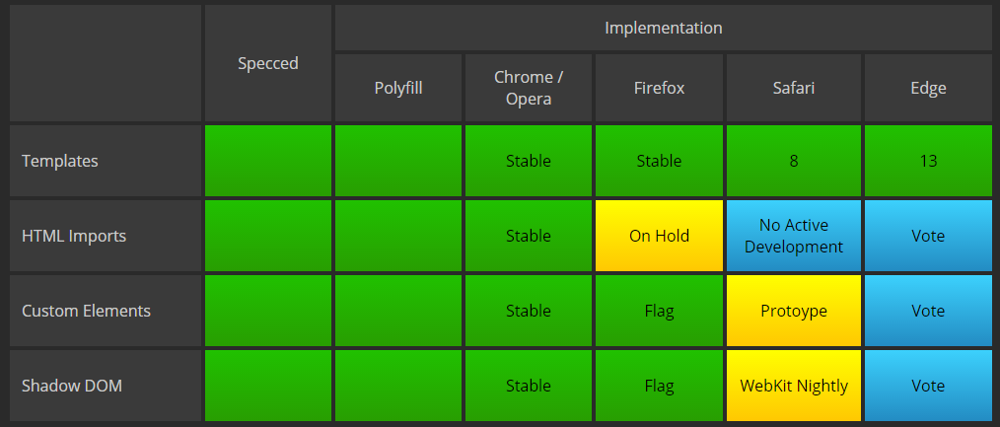
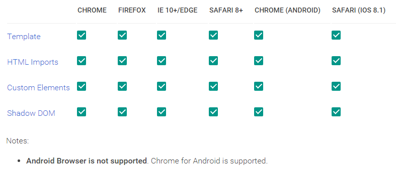

Web Components and Polymer
The future of the web ?

SCOOP Vortrag Jan. 2016 / M. Schmitt
Schon wieder ein JS GUI Framework?
Wir hatten bereits:
- jQuery
- GWT
- Dart
- Angular
- (React?)
Anforderungen an ein Web Framework
- möglichst nah an Browser engine.
- wenig Abstraktionschicht dazwischen.
- Html aus Html files. (nicht jsf,jsx,...) Html soll auch wie html aussehen.
- css aus css files. (oder sass, less,..)
- js möglichst schlank und einfach. (evtl. ES2015 und Transpiler)
- möglichst wenig Framework
Worum gehts diesmal?
- Spezifikation: http://webcomponents.org/
- Implementierung: https://www.polymer-project.org/1.0/
- deklarative Programmierung
- data binding
- kein vollständiges Framework
- Erstellung neuer HTML Elemente
Erfahrungen
- Polymer Konferenz in Amsterdam
- Polymer in privaten Projekten
Theorie
http://webcomponents.orgHTML, Document, DOM
- Browser erzeugt aus HTML document mt DOM Tree
- Elementtypen sind in Html Spec vorgegeben: a, input,...
- Elemente haben Ansicht und Aktionen
Web Components
Web Components ermöglichen die Erzeugung neuer Elemente.
| Custom Elements | |
| HTML Imports | |
| Templates | |
| Shadow Dom |
 Custom Elements
Custom Elements
This specification describes the method for enabling the author to define and use new types of DOM elements in a document.
//create element x-foo
document.registerElement('x-foo', {
prototype: Object.create(HTMLParagraphElement.prototype, {
firstMember: {
get: function() { return "foo"; },
enumerable: true,
configurable: true
},
}),
extends: 'p'
});
//use element x-foo
neue Elemente müssen ein "-" enthalten!
 HTML Imports
HTML Imports
HTML Imports are a way to include and reuse HTML documents in other HTML documents.
// import element from external html file
//use element x-foo
lädt externes HTML mit css, script und anderen links
 Templates
Templates
This specification describes a method for declaring inert DOM subtrees in HTML and manipulating them to instantiate document fragments with identical contents.
Name Colour Sex Legs
 Shadow DOM
Shadow DOM
This specification describes a method of establishing and maintaining functional boundaries between DOM trees and how these trees interact with each other within a document, thus enabling better functional encapsulation within the DOM.
 Shadow DOM
Shadow DOM
 Shadow DOM
Shadow DOM
Browser Unterstützung
Polyfill
Polyfill ermöglicht den Einsatz in "allen" Browsern.
Polyfill
webcomponents-lite.js
für Custom-elements aund html-import
<script src="webcomponentsjs/webcomponents-lite.js"/>
webcomponents.js für alle 4 Specs
plus ES6 Weak-Maps und Mutation Observer
<script src="webcomponentsjs/webcomponents.js"/>
Implementierungen und Frameworks
Die folgenden Libraries und Frameworks setzen auf den Web Components Specs auf:
- x-tag (ex-Mozilla, nun Microsoft)
- bosonic (minimalistic)
- Polymer (Google)
Interoperabilität
Web Components können aus "beliebigen" Libraries miteinenader gemischt werden.
Sie können auch gut in SPA Frameworks (angular, react) integriert werden.
Showcases
gesammelte Web Components findet man unter:
- https://customelements.io/
- https://elements.polymer-project.org/
Praxis
http://polymer-project.org
Polymer
- Library zum Erstellen von Web Components
- implementiert WebComponents Specs
- versteckt umständlichen Web Components Code.
- kann auch vollständige SPA erstellen.